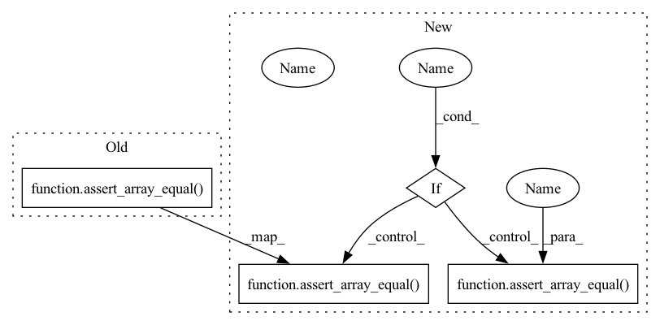

Pattern ID :28101
Before Change
(avals, bvals), count = crosstab(a, b, levels=[None, [0, 1, 2, 3]])
assert_array_equal(avals, expected_avals)
assert_array_equal(bvals, expected_bvals)
assert_array_equal( count, expected_count)
def test_crosstab_extra_levels():
// The pair of values (-1, 3) will be ignored, because we explicitlyAfter Change
sparse=sparse)
assert_array_equal(avals, expected_avals)
assert_array_equal(bvals, expected_bvals)
if sparse :
assert_array_equal( count.A, expected_count )
else:
assert_array_equal( count, expected_count)
@pytest.mark.parametrize("sparse", [False, True])
def test_crosstab_extra_levels(sparse):In pattern: SUPERPATTERN
Frequency: 3
Non-data size: 4
Instances Fragment ID: 83049611
Project Name: scipy/scipy
Commit Name: 3a6141a0096694223a662170eecf12b08e75be0e
Time: 2021-03-29
Author: warren.weckesser@gmail.com
File Name: scipy/stats/tests/test_crosstab.py
M Class Name: AnonimousClass
N Class Name: AnonimousClass
M Method Name: test_crosstab_levels(1)
N Method Name: test_crosstab_levels(0)
M Parent Class:
N Parent Class:
M File Name: scipy/stats/tests/test_crosstab.py
N File Name: scipy/stats/tests/test_crosstab.py
M Start Line: 60
M End Line: 60
N Start Line: 56
N End Line: 72
Before Change
(avals, bvals), count = crosstab(a, b, levels=[[0, 9], [0, 1, 2, 3]])
assert_array_equal(avals, expected_avals)
assert_array_equal(bvals, expected_bvals)
assert_array_equal( count, expected_count)
After Change
b = [1, 2, 3, 1, 2, 3, 3, 3]
expected_avals = [0, 9]
expected_bvals = [0, 1, 2, 3]
expected_count = np.array([[0, 1, 2, 1],
[0, 1, 0, 2]])
(avals, bvals), count = crosstab(a, b, levels=[[0, 9], [0, 1, 2, 3]],
sparse=sparse)
assert_array_equal(avals, expected_avals)
assert_array_equal(bvals, expected_bvals)
if sparse :
assert_array_equal( count.A, expected_count)
else:
assert_array_equal( count, expected_count)
Fragment ID: 83049610
Project Name: scipy/scipy
Commit Name: 3a6141a0096694223a662170eecf12b08e75be0e
Time: 2021-03-29
Author: warren.weckesser@gmail.com
File Name: scipy/stats/tests/test_crosstab.py
M Class Name: AnonimousClass
N Class Name: AnonimousClass
M Method Name: test_crosstab_extra_levels(1)
N Method Name: test_crosstab_extra_levels(0)
M Parent Class:
N Parent Class:
M File Name: scipy/stats/tests/test_crosstab.py
N File Name: scipy/stats/tests/test_crosstab.py
M Start Line: 75
M End Line: 75
N Start Line: 74
N End Line: 90
Before Change
(avals, bvals), count = crosstab(a, b)
assert_array_equal(avals, expected_avals)
assert_array_equal(bvals, expected_bvals)
assert_array_equal( count, expected_count)
def test_crosstab_basic_1d():
// Verify that a single input sequence works as expected.After Change
b = [2, 1, 3, 1, 2, 3, 3]
expected_avals = [0, 9]
expected_bvals = [1, 2, 3]
expected_count = np.array([[1, 2, 1],
[1, 0, 2]])
(avals, bvals), count = crosstab(a, b, sparse=sparse)
assert_array_equal(avals, expected_avals)
assert_array_equal(bvals, expected_bvals)
if sparse :
assert_array_equal( count.A, expected_count)
else:
assert_array_equal( count, expected_count)
def test_crosstab_basic_1d():
// Verify that a single input sequence works as expected. Fragment ID: 83049609
Project Name: scipy/scipy
Commit Name: 3a6141a0096694223a662170eecf12b08e75be0e
Time: 2021-03-29
Author: warren.weckesser@gmail.com
File Name: scipy/stats/tests/test_crosstab.py
M Class Name: AnonimousClass
N Class Name: AnonimousClass
M Method Name: test_crosstab_basic(1)
N Method Name: test_crosstab_basic(0)
M Parent Class:
N Parent Class:
M File Name: scipy/stats/tests/test_crosstab.py
N File Name: scipy/stats/tests/test_crosstab.py
M Start Line: 16
M End Line: 16
N Start Line: 8
N End Line: 23